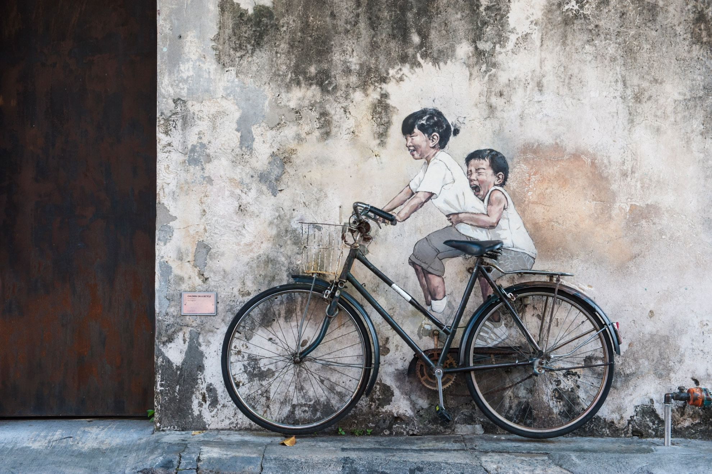
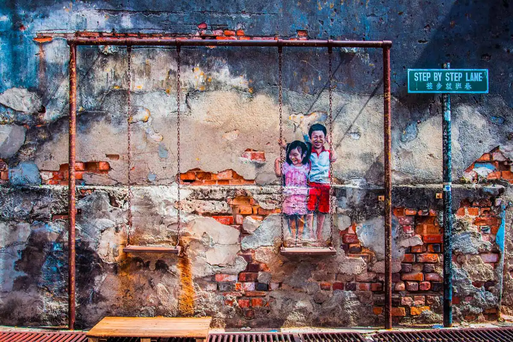
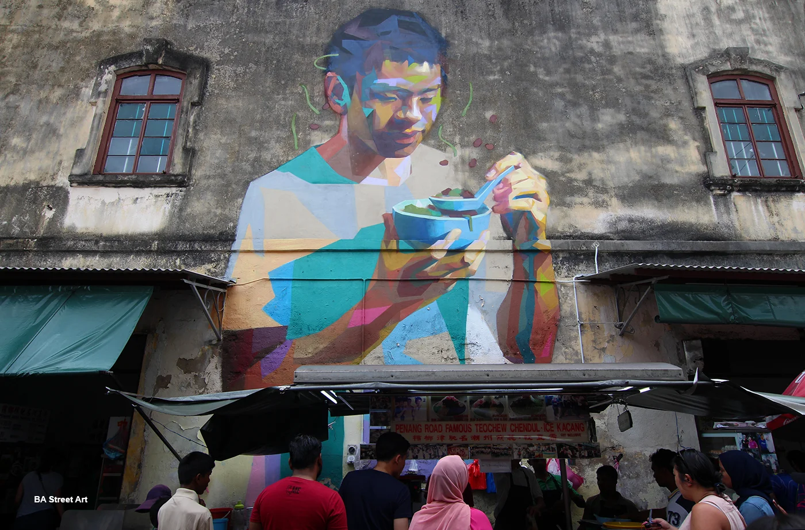
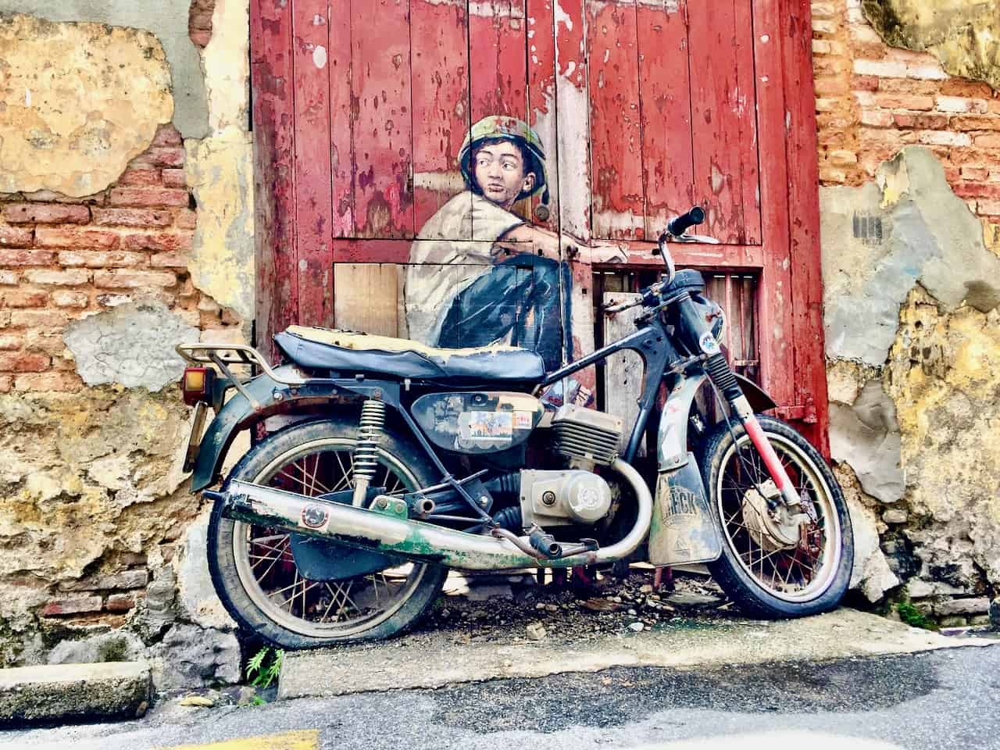

The Vibrant Street Art of Penang: Where Walls Tell Stories
Penang's Street Art, especially in George Town, is a vibrant showcase of creativity and culture. Famous for its interactive murals and steel rod sculptures, it brings the city's heritage to life. Works like "Children on a Bicycle" by Ernest Zacharevic have turned alleyways into open-air galleries, making Penang a must-visit for art lovers and photographers.
Penang, particularly its capital city George Town, is world-renowned not just for its delicious cuisine and heritage buildings, but also for its vibrant street art scene that brings color and culture to every corner. What began as a city-wide effort to inject life into old colonial streets has now turned George Town into a global hotspot for street art lovers.
The street art movement in Penang gained international attention in 2012 when Lithuanian artist Ernest Zacharevic was commissioned to create a series of murals as part of the George Town Festival. His works, such as “Children on a Bicycle”, “Boy on a Motorcycle”, and “Little Boy with Pet Dinosaur”, seamlessly blend 2D murals with 3D objects, creating a whimsical, interactive experience that quickly captivated the hearts of locals and tourists alike.
Since then, artists from around the world, as well as local talents, have added their own creative flair to Penang’s walls and alleyways. The art isn’t just decorative—it tells stories. Many murals reflect daily Malaysian life, cultural traditions, and even subtle social commentary, turning the city into an open-air gallery of the people's voice. Walking through George Town today is like strolling through a living museum. The artworks often pop up in the most unexpected places—down narrow alleys, on aging shophouses, and even tucked behind busy markets. A popular activity for visitors is to hunt for murals using a map or simply wandering through the streets, camera in hand.
The street art of Penang is more than just paint on a wall—it’s a celebration of culture, creativity, and community. It breathes life into the city’s historical core, connects the past with the present, and transforms ordinary spaces into extraordinary expressions of identity and imagination. Whether you’re an art enthusiast, a history buff, or a curious traveler, the street art of Penang offers a colorful and memorable experience you won’t want to miss.
